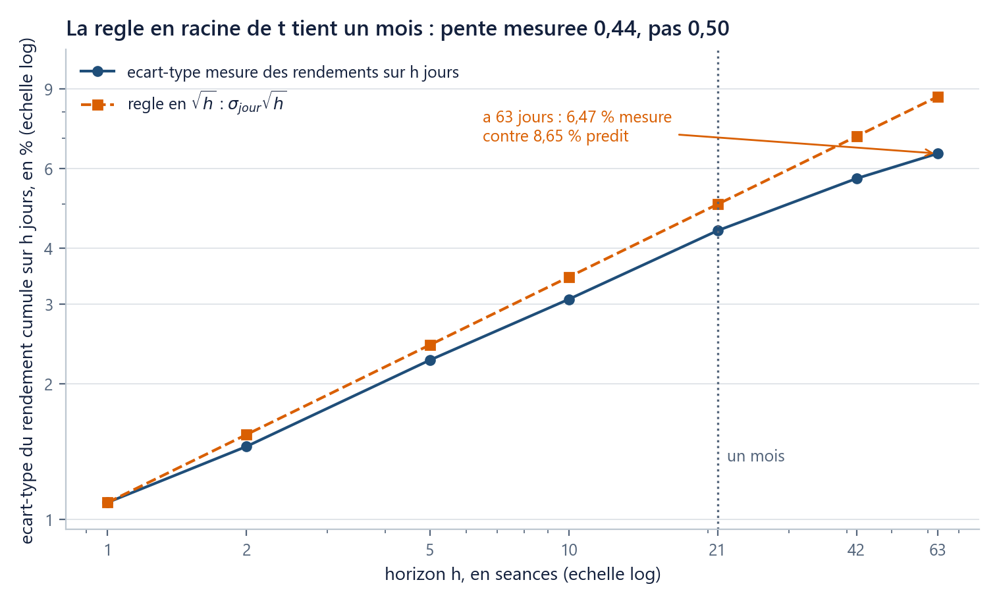

Où suis-je ? unité 2 sur 5
Les unités du chapitre
- 01Un prix n'est pas un rendement20 min
- 02La volatilité mesure l'écart au centre35 min
- 03Diversifier, ce n'est pas moyenner25 min
- 04Un euro demain ne vaut…20 min
- 05Une option, c'est d'abord un…25 min
Dans cette unité
Les objets de la finance qu'on peut observer
La volatilité mesure l’écart au centre, pas entre les valeurs
La volatilité est un écart-type annualisé par \sqrt{252} ; la fenêtre d'estimation fait partie du chiffre.
Durée : 35 min · Prérequis : u01 (rendement simple et log-rendement), ch00 u06 (np.std, ddof, tranches).
1. La question
Trois fonds, six années de rendements annuels, en pour-cent :
| A1 | A2 | A3 | A4 | A5 | A6 | |
|---|---|---|---|---|---|---|
| Alpha | −8 | 5 | 6 | 7 | 8 | 18 |
| Bêta | −8 | 0 | 4 | 10 | 12 | 18 |
| Gamma | −8 | −6 | 4 | 12 | 16 | 18 |
Les trois ont la même moyenne (6,00 %), le même minimum (−8) et le même maximum (+18). Aucun résumé habituel ne les sépare.
2. On essaie d’abord : la tâche, puis la prédiction
La tâche (10 min, sans aide). Inventez une mesure de régularité qui s'applique aux trois, calculez-la, et classez les fonds du plus régulier au moins régulier. Plusieurs réponses sont acceptables : l'écart moyen, l'écart médian, le nombre d'années sous la moyenne. Écrivez votre mesure avant de continuer, car ce que vous inventerez ressemblera à ce que fait la finance.
La prédiction, à écrire aussi : lequel des trois fonds a fait le plus d'argent sur les six ans ? Ils ont la même moyenne, donc la réponse « c'est pareil » est tentante.
3. Ce que votre mesure a trouvé
La mesure retenue par la finance est l'écart-type : l'écart de chaque valeur à la moyenne, élevé au carré, moyenné (en divisant par n-1, ce qu'écrit ddof=1 en numpy), puis la racine. Sur nos trois fonds : 8,32, 9,30, 11,17.
Une phrase d'autorisation, valable pour tout le chapitre. « Écart-type », « médiane », « corrélation » et « histogramme » sont employés ici au sens descriptif : des résumés calculés sur des nombres déjà observés, qui ne supposent aucun modèle et ne disent rien de demain. Le chapitre 2 leur donnera un second sens.
Et l'argent ? 100 € placés dans chacun deviennent 139,63 €, 139,10 € et 137,88 €, soit TCAC 5,72 %, 5,65 % et 5,50 %. Même moyenne, trois capitaux, et l'ordre suit exactement la dispersion : le plus régulier est le plus riche. Une moyenne arithmétique de 6 % n'est pas ce que le fonds a rapporté : ce qu'il a rapporté est la moyenne géométrique, le taux constant qui, appliqué six fois, donne le même capital final, le TCAC de u01, soit 5,72 % pour Alpha. Elle est plus petite d'environ la moitié du carré de l'écart-type : \tfrac12 \times 0{,}0832^2 = 0{,}35 point ici, contre 0,28 réellement observé, et « environ » est le mot juste. Ce carré s'écrira \sigma^2 au §5, et nous le vérifions au §6.
4. Le piège d’intuition à corriger d’abord
Un détour avant d'appliquer cette mesure à seize ans de données : elle se lit de travers par une personne sur deux.

5. Le chiffre du fil rouge, et sa fenêtre
Sur le S&P 500, l'écart-type des log-rendements quotidiens vaut 1,0903 % par séance sur toute la période, et 0,8090 % sur les 252 dernières séances. Ces chiffres par séance ne se comparent à rien : on les ramène à l'année.
Trois fenêtres, trois réponses sur le même actif :
| Fenêtre | 252 dernières séances | 1 260 dernières (5 ans) | les 4 151 séances |
|---|---|---|---|
| \sigma annualisée | 12,84 % | 16,96 % | 17,31 % |
Quatre points d'écart entre les deux premières. Et si l'on calcule la volatilité sur chaque fenêtre glissante d'un an (252 séances qu'on fait glisser le long de la série, ici de cinq en cinq, ce qui en donne 780), on obtient un minimum de 6,68 % (fenêtre finissant le 9 janvier 2018), un maximum de 34,84 % (4 février 2021) et une médiane de 15,00 %. Un facteur cinq, sous le même nom, pour le même indice.
Conséquence pratique : « la volatilité du S&P 500 » n'est pas un nombre. « La volatilité du S&P 500 sur les 252 dernières séances est de 12,84 % » en est un. Un chiffre sans sa fenêtre est incomplet, comme un rendement annualisé sans sa convention (u01).
import sys; sys.path.insert(0, "..")
import numpy as np
from mcdp_utils import charger_fil_rouge
ell = charger_fil_rouge()["rendements_log"]["SP500"]
sigma_1an = ell[-252:].std(ddof=1) * np.sqrt(252) # 0.12842136190643647
sigma_5ans = ell[-1260:].std(ddof=1) * np.sqrt(252) # 0.16955986527904043
sigma_tot = ell.std(ddof=1) * np.sqrt(252) # 0.1730738737956197
assert sigma_1an < sigma_5ans < sigma_tot
ell[-252:] est la tranche « les 252 dernières cases » ; ddof=1 divise par n-1. L'assert final est un contrôle : s'il tombe un jour, c'est que la fenêtre ou les données ont changé.
6. La règle en racine de t, vérifiée avant d’être crue
Prédiction, à écrire. Sur toute la période, \hat\sigma_{\text{jour}} = 1,090 \%. Quel écart-type prévoyez-vous pour les rendements cumulés sur 21 séances (un mois de bourse) ?
La règle annonce 1{,}090 \times \sqrt{21} = 4{,}996\,\%. La mesure directe, sur toutes les fenêtres de 21 séances, donne 4,368 %.
| Horizon h (séances) | 1 | 5 | 21 | 63 |
|---|---|---|---|---|
| écart-type mesuré | 1,090 % | 2,256 % | 4,368 % | 6,475 % |
| règle \hat\sigma_{\text{jour}}\sqrt{h} | 1,090 % | 2,438 % | 4,996 % | 8,654 % |

La règle tient à 7-13 % près jusqu'à un mois, puis se dégrade. En échelles logarithmiques, la règle est une droite de pente 0,50 exactement, puisque \log(\hat\sigma_{\text{jour}}\sqrt h) = \log\hat\sigma_{\text{jour}} + 0{,}50\log h ; la mesure, elle, donne 0,44 sur les sept horizons de la figure (h = 1, 2, 5, 10, 21, 42, 63, dont quatre repris dans le tableau), 0,43 sur ces quatre seuls, 0,46 en s'arrêtant à h = 21. \sqrt{t} est une convention de calcul, pas une propriété des marchés ; le cours l'emploiera partout, et cette figure dit ce qu'elle coûte.
Dernier chiffre, celui qui referme le §3 : sur le S&P 500, la moyenne annualisée des rendements simples vaut 13,15 %, celle des log-rendements 11,65 %, soit un écart de 1,50 point, pour \tfrac12\sigma^2 = \tfrac12 \times 0{,}1731^2 = 1{,}498. Sur AAPL, 4,01 pour 4,00 ; sur TLT, 1,12 pour 1,12. Ce demi-carré est le prix de la dispersion : Gamma finit avec 1,75 € de moins qu'Alpha.
7. Le piège classique : 252 ou 365 ?
8. Vérifiez-vous
- (★) \hat\sigma_{\text{jour}} = 0{,}8090\,\%. Quelle volatilité annualisée ? Et sur un mois (un douzième d'année) ?
- (★) Deux fonds de même moyenne 6 %, d'écarts-types 8,32 et 11,17. Lequel finit avec le plus gros capital, et d'environ combien par an ?
- (★★) On vous donne « volatilité du S&P 500 : 16,96 % ». Que manque-t-il pour que ce soit un résultat complet ?
- (★, retour sur u01) Pourquoi la volatilité se calcule-t-elle sur des log-rendements et non sur des rendements simples ?
- (★★, retour sur ch00 u06) Que change
ddof=1dansnp.std, et pourquoi le cours l'impose-t-il partout ?
Réponses
9. Ce que vous savez faire maintenant
- Calculer une volatilité annualisée à partir de prix, en nommant la fenêtre et la convention (
ddof=1, \sqrt{252}). - Expliquer, avec les blocs de Loosen, pourquoi la volatilité mesure une distance au centre et non entre valeurs voisines.
- Dire ce que la règle en \sqrt{t} vaut sur des données réelles (bonne à un mois, pente mesurée 0,44) et chiffrer l'écart entre moyenne arithmétique et moyenne géométrique, \tfrac12\sigma^2.
Unité suivante. Un chiffre par ligne, six lignes : reste à savoir ce que devient le risque quand on les met ensemble. Ce n'est pas la moyenne.
Sources. M. Kapur, Productive Failure, APA Division 2, https://boldscience.org/wp-content/uploads/2025/04/Productive-Failure.pdf · Batanero et al. 1994, p. 527-547 (blocs de Loosen), https://www.ugr.es/~batanero/pages/ARTICULOS/errors.PDF · M. Kitces, Volatility Drag, 27 décembre 2017, https://www.kitces.com/blog/volatility-drag-variance-drain-mean-arithmetic-vs-geometric-average-investment-returns/ · Macroption, Why Is Volatility Proportional to the Square Root of Time?, https://www.macroption.com/why-is-volatility-proportional-to-square-root-of-time/ · K. Abdelmessih (Moontower), 10 avril 2024, https://moontowermeta.com/if-you-annualize-volatility-with-252-days-can-you-use-that-number-in-a-365-day-option-model/